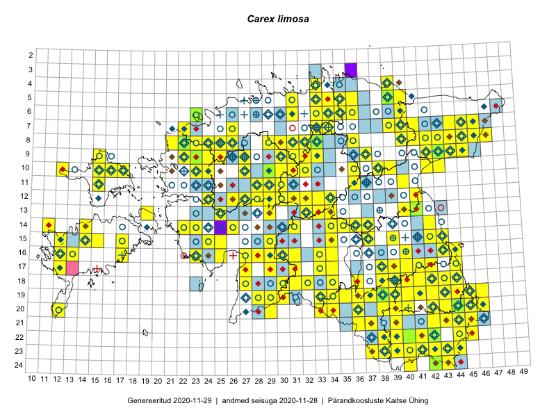

Carex limosa
Uuendatud: 2016-12-08
Kaardile koondatud taksonid: Carex limosa L.

Kaart põhineb 186 kirjel, neist vaatlusi 185 ja eksemplare 1. Taksonit on leitud 149 ruudust.
| Ruut | Vaatleja(d) | Vaatlusaeg | Kirje tüüp | Viide andmebaasikirjele |
|---|---|---|---|---|
| 12-29 | Tiit Hallikma, Indrek Tammekänd, Toomas Kukk | 2015-06-09 | ruut/ala | vaata PlutoFis |
| 09-31 | Ott Luuk, Toivo Sepp | 2015-07-29 | ruut/ala | vaata PlutoFis |
| 14-42 | Peedu Saar, Ott Luuk | 2015-06-21 | ruut/ala | vaata PlutoFis |
| 18-44 | Peedu Saar | 2015-07-04 | ruut/ala | vaata PlutoFis |
| 23-43 | Ott Luuk, Peedu Saar | 2015-08-12 | ruut/ala | vaata PlutoFis |
| 14-31 | Peedu Saar, Liina Oja | 2015-06-10 | ruut/ala | vaata PlutoFis |
| 08-44 | Peedu Saar, Liina Oja | 2015-07-20 | ruut/ala | vaata PlutoFis |
| 08-45 | Peedu Saar, Liina Oja | 2015-07-22 | ruut/ala | vaata PlutoFis |
| 10-31 | Ott Luuk, Toivo Sepp | 2015-07-12 | ruut/ala | vaata PlutoFis |
| 16-44 | Toomas Kukk, Eerik Leibak | 2015-07-29 | ruut/ala | vaata PlutoFis |
| 11-29 | Toomas Kukk, Tiit Hallikma | 2015-06-11 | ruut/ala | vaata PlutoFis |
| 09-45 | Peedu Saar, Liina Oja | 2015-07-24 | ruut/ala | vaata PlutoFis |
| 08-44 | Toomas Kukk, Tiit Hallikma | 2015-06-01 | ruut/ala | vaata PlutoFis |
| 14-36 | Peedu Saar | 2015-08-04 | ruut/ala | vaata PlutoFis |
| 13-40 | Peedu Saar | 2015-08-10 | ruut/ala | vaata PlutoFis |
| 13-41 | Peedu Saar | 2015-08-11 | ruut/ala | vaata PlutoFis |
| 23-42 | Peedu Saar, Ott Luuk | 2015-08-12 | ruut/ala | vaata PlutoFis |
| 24-42 | Peedu Saar, Ott Luuk | 2015-08-13 | ruut/ala | vaata PlutoFis |
| 10-29 | Tiit Hallikma, Toomas Kukk | 2015-06-11 | ruut/ala | vaata PlutoFis |
| 07-41 | Tiit Hallikma, Toomas Kukk | 2015-07-23 | ruut/ala | vaata PlutoFis |
| 07-44 | Tiit Hallikma, Toomas Kukk | 2015-07-20 | ruut/ala | vaata PlutoFis |
| 09-44 | Ott Luuk, Hannes Pehlak | 2015-07-24 | ruut/ala | vaata PlutoFis |
| 07-40 | Ott Luuk, Hannes Pehlak | 2015-07-23 | ruut/ala | vaata PlutoFis |
| 08-41 | Ott Luuk, Meeli Mesipuu | 2015-07-20 | ruut/ala | vaata PlutoFis |
| 07-45 | Ott Luuk, Hannes Pehlak | 2015-07-22 | ruut/ala | vaata PlutoFis |
| 08-43 | Thea Kull, Eerik Leibak | 2016-07-24 | ruut/ala | vaata PlutoFis |
| 17-40 | Thea Kull, Peedu Saar | 2015-06-19 | ruut/ala | vaata PlutoFis |
| 17-41 | Thea Kull, Peedu Saar | 2015-06-19 | ruut/ala | vaata PlutoFis |
| 17-39 | Thea Kull, Peedu Saar | 2015-06-17 | ruut/ala | vaata PlutoFis |
| 20-45 | Toomas Kukk, Timo Luhamäe, Kersti Tambets, Sten Mander, Janika Sammasto | 2014-07-30 | ruut/ala | vaata PlutoFis |
| 17-31 | Ott Luuk, Hannes Pehlak | 2015-06-11 | ruut/ala | vaata PlutoFis |
| 12-30 | Ott Luuk, Hannes Pehlak | 2015-06-09 | ruut/ala | vaata PlutoFis |
| 12-31 | Ott Luuk, Hannes Pehlak | 2015-06-09 | ruut/ala | vaata PlutoFis |
| 08-41 | Meeli Mesipuu, Ott Luuk | 2015-07-20 | punkt | vaata PlutoFis |
| 10-23 | Toomas Kukk, Thea Kull | 2014-08-22 | ruut/ala | vaata PlutoFis |
| 15-24 | Indrek Tammekänd, Liisa Rennel, Agu Leivits, Hannes Pehlak, Irja Tammekänd | 2015-04-27 | ruut/ala | vaata PlutoFis |
| 16-43 | Thea Kull, Meeli Mesipuu | 2015-08-12 | ruut/ala | vaata PlutoFis |
| 10-29 | Ott Luuk, Toivo Sepp | 2015-08-21 | ruut/ala | vaata PlutoFis |
| 11-29 | Ott Luuk, Toivo Sepp | 2015-08-20 | ruut/ala | vaata PlutoFis |
| 22-39 | Eeva-Maria Jeletsky, Tarmo Niitla | 2015-07-25 | ruut/ala | vaata PlutoFis |
| 10-32 | Ott Luuk | 2015-08-03 | ruut/ala | vaata PlutoFis |
| 23-39 | Eeva-Maria Jeletsky, Tarmo Niitla | 2015-07-25 | ruut/ala | vaata PlutoFis |
| 16-33 | Maria Abakumova | 2015-06-30 | ruut/ala | vaata PlutoFis |
| 24-40 | Eeva-Maria Jeletsky, Tarmo Niitla | 2015-07-26 | ruut/ala | vaata PlutoFis |
| 10-30 | Ott Luuk, Peedu Saar | 2014-08-14 | ruut/ala | vaata PlutoFis |
| 10-16 | Ott Luuk | 2014-08-28 | ruut/ala | vaata PlutoFis |
| 19-37 | Eeva-Maria Jeletsky, Tarmo Niitla | 2015-08-10 | ruut/ala | vaata PlutoFis |
| 17-33 | Maria Abakumova, Helle Mäemets | 2015-07-03 | ruut/ala | vaata PlutoFis |
| 18-32 | Maria Abakumova, Tiit Hallikma | 2015-07-09 | ruut/ala | vaata PlutoFis |
| 17-12 | Mari Reitalu | 2015-08-13 | ruut/ala | vaata PlutoFis |
| 23-41 | Eeva-Maria Jeletsky, Tarmo Niitla | 2015-08-03 | ruut/ala | vaata PlutoFis |
| 15-25 | Maret Gerz, Leena Gerz | 2015-08-08 | ruut/ala | vaata PlutoFis |
| 08-33 | Erkki Otsman, Sergei Smirnov | 2015-07-02 | ruut/ala | vaata PlutoFis |
| 09-32 | Ott Luuk, Toivo Sepp | 2015-08-18 | ruut/ala | vaata PlutoFis |
| 16-12 | Mari Reitalu | 2015-09-03 | ruut/ala | vaata PlutoFis |
| 16-12 | Mari Reitalu, Triin Reitalu | 2015-07-20 | ruut/ala | vaata PlutoFis |
| 14-11 | Mari Reitalu, Oliver Parrest | 2015-07-14 | ruut/ala | vaata PlutoFis |
| 16-13 | Mari Reitalu, Oliver Parrest | 2015-07-27 | ruut/ala | vaata PlutoFis |
| 09-33 | Thea Kull | 2014-07-14 | ruut/ala | vaata PlutoFis |
| 08-31 | Thea Kull | 2014-07-17 | ruut/ala | vaata PlutoFis |
| 10-32 | Thea Kull | 2014-08-02 | ruut/ala | vaata PlutoFis |
| 20-12 | Oliver Parrest | 2015-08-15 | ruut/ala | vaata PlutoFis |
| 17-29 | Meeli Mesipuu, Timo Luhamäe | 2015-06-09 | ruut/ala | vaata PlutoFis |
| 13-29 | Meeli Mesipuu, Timo Luhamäe | 2015-06-10 | ruut/ala | vaata PlutoFis |
| 12-32 | Meeli Mesipuu, Timo Luhamäe | 2015-06-11 | ruut/ala | vaata PlutoFis |
| 08-40 | Karin Kikas, Elle Rajandu | 2015-06-05 | ruut/ala | vaata PlutoFis |
| 12-33 | Meeli Mesipuu, Timo Luhamäe | 2015-06-11 | ruut/ala | vaata PlutoFis |
| 14-37 | Meeli Mesipuu, Timo Luhamäe | 2015-06-12 | ruut/ala | vaata PlutoFis |
| 19-46 | Meeli Mesipuu, Thea Kull | 2015-08-19 | ruut/ala | vaata PlutoFis |
| 07-46 | Timo Luhamäe, Eerik Leibak | 2015-05-31 | ruut/ala | vaata PlutoFis |
| 15-17 | Karin Kikas, Elle Rajandu | 2015-07-21 | ruut/ala | vaata PlutoFis |
| 11-30 | Toivo Sepp, Ott Luuk | 2015-08-20 | ruut/ala | vaata PlutoFis |
| 18-36 | Helle Mäemets, Mare Leis | 2015-06-24 | ruut/ala | vaata PlutoFis |
| 12-41 | Kadi Palmik, Helle Mäemets | 2015-07-24 | ruut/ala | vaata PlutoFis |
| 10-15 | Ott Luuk | 2014-08-28 | ruut/ala | vaata PlutoFis |
| 11-15 | Peedu Saar | 2014-08-28 | ruut/ala | vaata PlutoFis |
| 08-47 | Thea Kull, Peedu Saar | 2014-07-26 | ruut/ala | vaata PlutoFis |
| 14-37 | Meeli Mesipuu | 2015-05-22 | punkt | vaata PlutoFis |
| 09-33 | Peedu Saar, Ott Luuk | 2014-08-05 | ruut/ala | vaata PlutoFis |
| 16-40 | Maret Gerz, Ott Luuk | 2014-06-25 | ruut/ala | vaata PlutoFis |
| 12-33 | Meeli Mesipuu, Timo Luhamäe | 2015-06-11 | punkt | vaata PlutoFis |
| 10-24 | Hanna-Eliisa Luts, Tõnu Ploompuu, Anna-Grete Rebane | 2015-07-19 | ruut/ala | vaata PlutoFis |
| 08-24 | Sirje Lagle, Tõnu Ploompuu | 2015-08-18 | ruut/ala | vaata PlutoFis |
| 08-29 | Thea Kull, Ott Luuk | 2016-05-30 | ruut/ala | vaata PlutoFis |
| 09-23 | Hanna-Eliisa Luts, Tõnu Ploompuu | 2015-07-16 | ruut/ala | vaata PlutoFis |
| 16-28 | Indrek Tammekänd | 2016-06-03 | ruut/ala | vaata PlutoFis |
| 07-45 | Indrek Tammekänd | 2016-05-30 | ruut/ala | vaata PlutoFis |
| 07-46 | Indrek Tammekänd | 2016-05-30 | ruut/ala | vaata PlutoFis |
| 08-46 | Indrek Tammekänd | 2016-05-28 | ruut/ala | vaata PlutoFis |
| 18-40 | Toomas Kukk, Tiit Hallikma, Johannes Kõdar | 2016-06-13 | ruut/ala | vaata PlutoFis |
| 19-40 | Toomas Kukk, Tiit Hallikma, Johannes Kõdar | 2016-06-13 | ruut/ala | vaata PlutoFis |
| 22-42 | Toomas Kukk, Tiit Hallikma, Johannes Kõdar | 2016-06-15 | ruut/ala | vaata PlutoFis |
| 22-40 | Toomas Kukk, Tiit Hallikma | 2016-06-16 | ruut/ala | vaata PlutoFis |
| 23-44 | Rein Kalamees, Eerik Leibak | 2016-06-15 | ruut/ala | vaata PlutoFis |
| 19-45 | Toomas Kukk, Tiit Hallikma | 2016-06-17 | ruut/ala | vaata PlutoFis |
| 19-43 | Sander Laherand, Ott Luuk | 2016-06-17 | ruut/ala | vaata PlutoFis |
| 22-38 | Rein Kalamees, Eerik Leibak | 2016-06-16 | ruut/ala | vaata PlutoFis |
| 23-38 | Rein Kalamees, Eerik Leibak | 2016-06-16 | ruut/ala | vaata PlutoFis |
| 20-39 | Rein Kalamees, Eerik Leibak | 2016-06-17 | ruut/ala | vaata PlutoFis |
| 21-42 | Sander Laherand, Ott Luuk | 2016-06-16 | ruut/ala | vaata PlutoFis |
| 23-41 | Sander Laherand, Ott Luuk, Susanna Vain | 2016-06-15 | ruut/ala | vaata PlutoFis |
| 23-40 | Sander Laherand, Ott Luuk, Susanna Vain | 2016-06-14 | ruut/ala | vaata PlutoFis |
| ? | Silvia Pihu, Illi Tarmu | 2015-07-12 | punkt | vaata PlutoFis |
| 21-37 | Silvia Pihu | 2015-06-28 | ruut/ala | vaata PlutoFis |
| 19-36 | Peedu Saar, Tarmo Niitla | 2016-06-14 | ruut/ala | vaata PlutoFis |
| 20-40 | Peedu Saar, Tarmo Niitla | 2016-06-17 | ruut/ala | vaata PlutoFis |
| 20-43 | Meeli Mesipuu, Timo Luhamäe | 2016-06-17 | ruut/ala | vaata PlutoFis |
| 19-41 | Vivika Väli, Ülo Väli | 2015-06-20 | ruut/ala | vaata PlutoFis |
| 17-44 | Maret Gerz, Liina Oja | 2016-06-13 | ruut/ala | vaata PlutoFis |
| 23-37 | Maret Gerz, Liina Oja | 2016-06-15 | ruut/ala | vaata PlutoFis |
| 19-43 | Vivika Väli, Ülo Väli | 2015-08-05 | ruut/ala | vaata PlutoFis |
| 19-37 | Maret Gerz, Liina Oja | 2016-06-16 | ruut/ala | vaata PlutoFis |
| 18-27 | Peedu Saar, Ott Luuk | 2016-06-10 | ruut/ala | vaata PlutoFis |
| 22-38 | Vivika Väli, Kaili Kattai | 2015-08-10 | ruut/ala | vaata PlutoFis |
| 09-45 | Eerik Leibak | 2016-06-30 | ruut/ala | vaata PlutoFis |
| 14-23 | Thea Kull, Eerik Leibak | 2016-07-05 | ruut/ala | vaata PlutoFis |
| 09-30 | Sander Laherand, Toomas Kukk | 2016-07-06 | ruut/ala | vaata PlutoFis |
| 18-39 | Tarmo Niitla, Peedu Saar | 2016-06-13 | ruut/ala | vaata PlutoFis |
| 20-36 | Tarmo Niitla, Peedu Saar | 2016-06-14 | ruut/ala | vaata PlutoFis |
| 19-44 | Tarmo Niitla, Peedu Saar | 2016-06-15 | ruut/ala | vaata PlutoFis |
| 20-42 | Tarmo Niitla, Peedu Saar | 2016-06-16 | ruut/ala | vaata PlutoFis |
| 14-22 | Mari Reitalu, Oliver Parrest | 2016-07-04 | ruut/ala | vaata PlutoFis |
| 07-40 | Toomas Kukk, Tiit Hallikma | 2016-07-29 | ruut/ala | vaata PlutoFis |
| 20-34 | Thea Kull, Eerik Leibak | 2016-07-18 | ruut/ala | vaata PlutoFis |
| 17-33 | Toomas Kukk, Eerik Leibak | 2016-07-20 | ruut/ala | vaata PlutoFis |
| 05-36 | Tõnu Ploompuu, Eerik Leibak | 2016-07-27 | ruut/ala | vaata PlutoFis |
| 21-43 | Thea Kull, Peedu Saar | 2016-08-05 | ruut/ala | vaata PlutoFis |
| 10-39 | Ott Luuk, Eerik Leibak | 2016-08-03 | ruut/ala | vaata PlutoFis |
| 10-42 | Ott Luuk, Eerik Leibak | 2016-08-04 | ruut/ala | vaata PlutoFis |
| 09-42 | Ott Luuk, Eerik Leibak | 2016-08-05 | ruut/ala | vaata PlutoFis |
| 09-37 | Ulvi Selgis | 2016-07-31 | ruut/ala | vaata PlutoFis |
| 14-22 | Erkki Otsman, Sergei Smirnov | 2016-06-23 | ruut/ala | vaata PlutoFis |
| 18-43 | Thea Kull, Indrek Tammekänd | 2016-07-19 | ruut/ala | vaata PlutoFis |
| 14-34 | Thea Kull, Tiit Hallikma | 2016-07-22 | ruut/ala | vaata PlutoFis |
| 13-32 | Thea Kull, Raivo Kalle, Susanna Vain | 2016-07-21 | ruut/ala | vaata PlutoFis |
| 11-15 | Thea Kull, Peedu Saar | 2016-08-09 | ruut/ala | vaata PlutoFis |
| 10-12 | Sander Laherand, Maret Gerz, Nele Jõessar | 2016-08-10 | ruut/ala | vaata PlutoFis |
| 06-40 | Sander Laherand, Peedu Saar | 2016-07-28 | ruut/ala | vaata PlutoFis |
| 19-33 | Liina Oja, Elle Rajandu | 2016-07-18 | punkt | vaata PlutoFis |
| 22-45 | Peedu Saar, Karin Kikas | 2016-08-18 | ruut/ala | vaata PlutoFis |
| 22-44 | Peedu Saar, Karin Kikas | 2016-08-19 | ruut/ala | vaata PlutoFis |
| 23-44 | Peedu Saar, Karin Kikas | 2016-08-19 | ruut/ala | vaata PlutoFis |
| 20-46 | Timo Luhamäe, Meeli Mesipuu | 2016-06-14 | ruut/ala | vaata PlutoFis |
| 23-43 | Timo Luhamäe, Meeli Mesipuu | 2016-06-15 | punkt | vaata PlutoFis |
| 20-36 | Thea Kull, Ott Luuk | 2016-08-23 | ruut/ala | vaata PlutoFis |
| 18-38 | Thea Kull, Ott Luuk | 2016-08-23 | punkt | vaata PlutoFis |
| 11-30 | Erkki Otsman, Sergei Smirnov | 2016-07-18 | ruut/ala | vaata PlutoFis |
| 08-31 | Erkki Otsman, Sergei Smirnov | 2016-07-24 | ruut/ala | vaata PlutoFis |
| 08-31 | Erkki Otsman, Sergei Smirnov | 2016-07-22 | ruut/ala | vaata PlutoFis |
| 15-37 | Karin Kaljund, Kaire Lanno | 2016-07-25 | ruut/ala | vaata PlutoFis |
| 19-35 | Sirje Azarov, Peedu Saar | 2016-07-19 | ruut/ala | vaata PlutoFis |
| 07-22 | Mari Reitalu, Eerik Leibak | 2016-07-07 | ruut/ala | vaata PlutoFis |
| 06-33 | Peedu Saar, Toomas Kukk | 2016-09-14 | ruut/ala | vaata PlutoFis |
| 07-33 | Peedu Saar, Toomas Kukk | 2016-09-13 | ruut/ala | vaata PlutoFis |
| 13-19 | Mari Reitalu, Sirje Azarov | 2016-08-16 | ruut/ala | vaata PlutoFis |
| 09-32 | Toomas Kukk, Peedu Saar | 2016-09-16 | ruut/ala | vaata PlutoFis |
| 06-36 | Peedu Saar, Liina Oja, Susanna Vain | 2016-07-27 | ruut/ala | vaata PlutoFis |
| 05-35 | Peedu Saar, Liina Oja, Susanna Vain | 2016-07-27 | ruut/ala | vaata PlutoFis |
| 05-40 | Peedu Saar, Sander Laherand | 2016-07-28 | ruut/ala | vaata PlutoFis |
| 08-42 | Peedu Saar, Timo Luhamäe | 2016-07-29 | ruut/ala | vaata PlutoFis |
| 09-30 | Ott Luuk, Peedu Saar | 2016-09-06 | ruut/ala | vaata PlutoFis |
| 16-23 | Peedu Saar, Timo Luhamäe, Johannes Kõdar | 2016-07-04 | ruut/ala | vaata PlutoFis |
| 13-25 | Peedu Saar, Timo Luhamäe, Johannes Kõdar | 2016-07-05 | ruut/ala | vaata PlutoFis |
| 18-38 | Ott Luuk, Thea Kull | 2016-08-23 | ruut/ala | vaata PlutoFis |
| 05-39 | Ott Luuk, Tiit Hallikma | 2016-07-28 | ruut/ala | vaata PlutoFis |
| 17-38 | Meeli Mesipuu | 2016-10-15 | punkt | vaata PlutoFis |
| 09-33 | Ott Luuk, Eerik Leibak | 2016-07-25 | ruut/ala | vaata PlutoFis |
| 05-34 | Ott Luuk, Hannes Pehlak | 2016-07-27 | ruut/ala | vaata PlutoFis |
| 13-33 | Ott Luuk, Indrek Tammekänd | 2016-07-21 | ruut/ala | vaata PlutoFis |
| 18-30 | Ott Luuk, Raivo Kalle, Susanna Vain | 2016-07-19 | ruut/ala | vaata PlutoFis |
| 19-30 | Ott Luuk, Raivo Kalle, Susanna Vain | 2016-07-19 | ruut/ala | vaata PlutoFis |
| 20-44 | Meeli Mesipuu | 2016-09-08 | ruut/ala | vaata PlutoFis |
| 08-31 | Toivo Sepp, Peedu Saar | 2016-07-18 | ruut/ala | vaata PlutoFis |
| 17-34 | Toivo Sepp, Meeli Mesipuu, Susanna Vain | 2016-07-20 | ruut/ala | vaata PlutoFis |
| 10-31 | Toivo Sepp, Peedu Saar | 2016-07-22 | ruut/ala | vaata PlutoFis |
| 04-33 | Meeli Mesipuu, Timo Luhamäe | 2016-07-28 | ruut/ala | vaata PlutoFis |
| 19-28 | Ott Luuk, Peedu Saar | 2016-06-09 | ruut/ala | vaata PlutoFis |
| 19-41 | Ott Luuk, Sander Laherand, Susanna Vain | 2016-06-13 | ruut/ala | vaata PlutoFis |
| 15-29 | Elle Rajandu, Tiit Hallikma | 2016-07-21 | ruut/ala | vaata PlutoFis |
| 22-45 | Jaak-Albert Metsoja, Mari Metsoja | 2016-06-15 | ruut/ala | vaata PlutoFis |
| 08-24 | Jaak-Albert Metsoja, Mari Metsoja | 2016-07-08 | ruut/ala | vaata PlutoFis |
| 08-26 | Jaak-Albert Metsoja, Mari Metsoja | 2016-07-04 | ruut/ala | vaata PlutoFis |
| 09-43 | Hannes Pehlak, Ott Luuk | 2016-07-29 | ruut/ala | vaata PlutoFis |
| 10-43 | Hannes Pehlak, Ott Luuk | 2016-07-29 | ruut/ala | vaata PlutoFis |
| 18-27 | Oliver Parrest, Elle Rajandu | 2016-07-19 | ruut/ala | vaata PlutoFis |
| 08-22 | Thea Kull | 2012-05-31 | eksemplar | vaata PlutoFis |